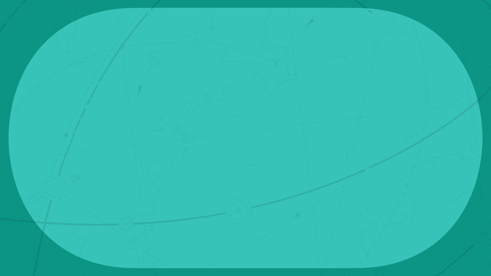

No.01 ✈ HAMA
No.01 ✈ HAMA
AYA SASAI
笹井 綾
今がすべての／方向音痴なムードメーカー
- AGE22
- HEIGHT145cm
- BIRTH09.20
- BLOODA
- JOBENGINEER
22歳・エンジニア。2054年冬にHAMAへ来て、2055年1月に転職したばかり。明るく猪突猛進、極度の方向音痴。


DATE / TIME----.--.--
WEATHER---
[HAMA]
#HAMA NICE TRIP!
#溶けてそのまま雲隠れ
LATEST UPDATE : 2026.11.09 20:40:12
✈✈✈ WHAT IS THIS ✈✈✈
2055年、近未来の横浜――HAMA。
ここは、笹井綾というひとりのエンジニアの記録を集めた場所。
村と、大樹と、神隠し。名前を失い、名前を与えられた少女の、
「今」だけを生きる物語のアーカイブ。
※本サイトは一次創作×二次創作の夢創作の個人アーカイブです。18TRIP公式とは関係ありません。
✈✈✈ MEMBERS ✈✈✈
No.01 ✈ HAMA
AYA SASAI
今がすべての／方向音痴なムードメーカー
22歳・エンジニア。2054年冬にHAMAへ来て、2055年1月に転職したばかり。明るく猪突猛進、極度の方向音痴。
✈✈✈ EVENT STORY ✈✈✈
壊生カメリア イベントストーリー特設ページ ― 落露がメインホスト、綾がサブホスト ▶✈✈✈ MOVIE ✈✈✈
 プロモーションムービー
プロモーションムービー

「壊生カメリア」ティザー
システム紹介